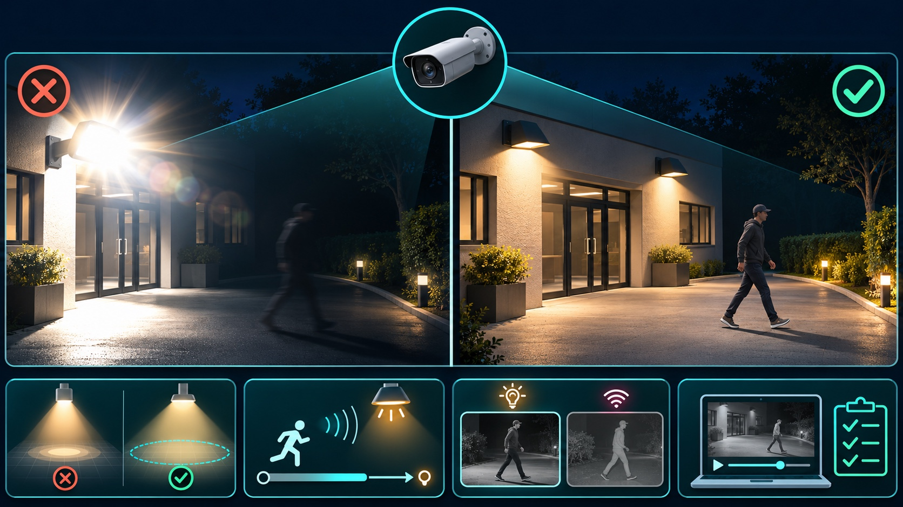

Good security-camera lighting is even, aimed into the scene rather than into the lens, and matched to the camera’s field of view. The goal is not maximum brightness. It is usable recorded detail on a moving subject without washed-out faces, deep shadows, reflections or unnecessary light spill.
Decide what each camera must show after dark: a general approach, a recognizable person at an entrance, activity around a gate, or detail in a parking area. Then mark the actual subject distance and camera field of view. A light that brightens the foreground but leaves the target area dark does not solve the recording problem.
Lighting cannot replace correct camera placement or enough detail at the target. Use our camera-placement guide and resolution and pixel-density guide before choosing fixtures.
Visible light can support color video and helps people navigate the area. Color can be useful when clothing, vehicles or objects must be described. However, a bright fixture in or near the frame can create glare, strong contrast and lost detail. Use shielded fixtures that direct light downward and across the target area, not toward the lens or neighboring property.
Infrared light is invisible or only faintly visible depending on wavelength and normally produces monochrome night video. It is useful where continuous visible light would be intrusive. The infrared beam still needs to cover the camera’s useful view evenly. A narrow hotspot can overexpose the center while leaving the edges dark.
Built-in IR can reflect from nearby walls, eaves, windows, spider webs, dirt or water on a dome. Axis specifically recommends avoiding reflective objects close to the beam and keeping domes clean. See our night-vision troubleshooting guide if the image looks foggy, washed out or ringed by glare.
Axis notes that illumination which is too narrow can create a bright center and poorly lit edges, while a beam that is too wide wastes light and reduces useful reach. Aim for a smooth level of light across the area where a subject can move. For a wide driveway or parking view, several lower-output, well-aimed fixtures may give a more balanced image than one intense floodlight.
The National Park Service’s outdoor-lighting principles likewise recommend lighting only the task area, using shielded fixtures and adding timers, motion detectors or dimmers when appropriate.
Motion lighting can limit how long visible light operates, but the timing must work with the camera. Test whether the fixture activates before the subject reaches the important part of the view and remains on long enough to record the complete event. Sudden light changes can cause a brief exposure adjustment, so review the first seconds of the saved clip—not only the stabilized live view.
Set the sensor to cover the approach without repeatedly triggering on traffic, branches or small animals. If the light and camera use separate motion sensors, test them together from every direction a person or vehicle can enter.
Low light often forces a camera to use a slower shutter, which can make a stationary scene look bright while a moving person becomes blurred. Strong backlight can also hide facial detail even when the overall picture looks sharp. Axis recommends testing difficult wide-dynamic-range scenes because a datasheet value does not show how well motion will be handled.
Review recorded motion at the time and distance that matter. If the subject blurs, the solution may involve more even light, exposure changes, a different camera or a narrower coverage job—not simply raising brightness.
If you are planning new cameras or correcting weak night footage in Greater Los Angeles, a professional scope should document the camera view, target distance, lighting method, power path and recorded acceptance test. Our installer quote checklist shows what to ask for before approving the work.
Tell us about your place and we'll respond within one business day with a tailored plan and pricing. Or call us right now.
Your request is in. A Tech Secure 360 specialist will reach out within one business day. Need help now? Call (747) 336-2737.